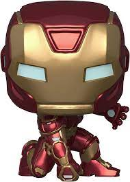
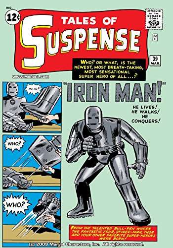
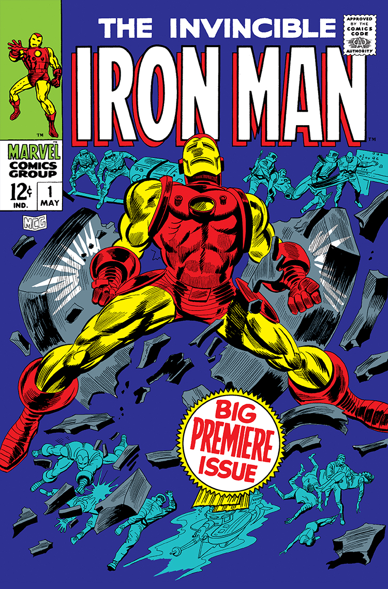

| ¿Quién es Iron-Man? | ¿Cuándo salió en Comics? | ¿Cuándo salió en Película? |
|
Anthony Edward "Tony" Stark es un multimillonario magnate empresarial y filántropo estadounidense, playboy e ingenioso científico, que sufrió una grave lesión en el pecho durante un secuestro en el Medio Oriente. Cuando sus captores intentaron forzarlo a construir un arma de destrucción masiva, elaboró , en cambio, una armadura para salvar su vida y escapar del cautiverio. Más tarde, Stark desarrolla su traje, agregando armas y otros dispositivos tecnológicos que diseñaba a través de su compañía, Industrias Stark. Usa el traje y las versiones sucesivas para proteger al mundo como Iron Man. Aunque al principio ocultó su verdadera identidad, Stark finalmente declaró quién era en un anuncio público. |
Apariciones: | 30 de abril de 2008 |
|  |   |